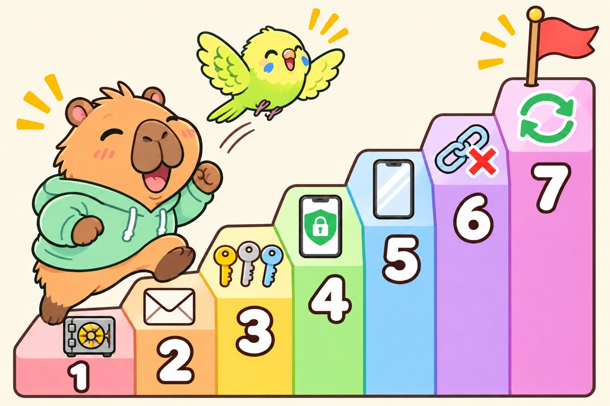
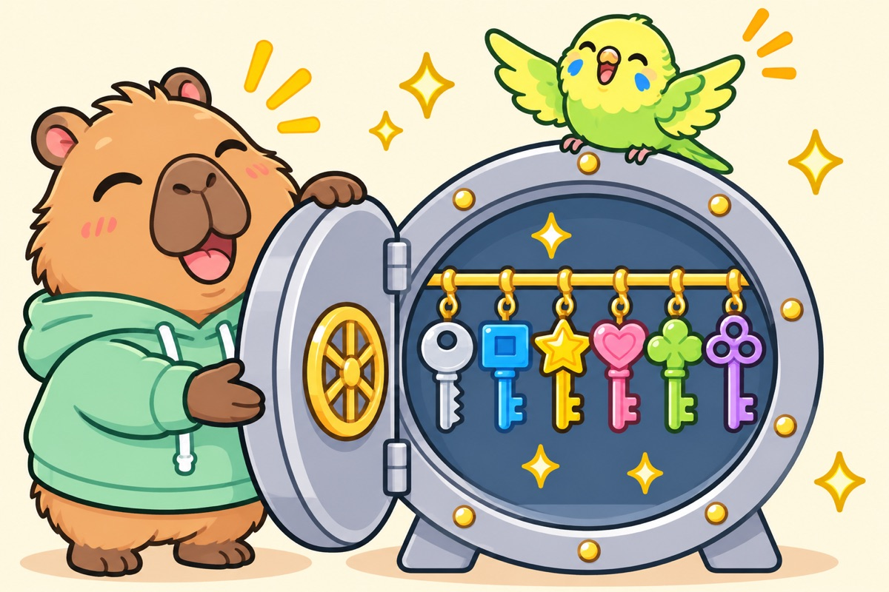
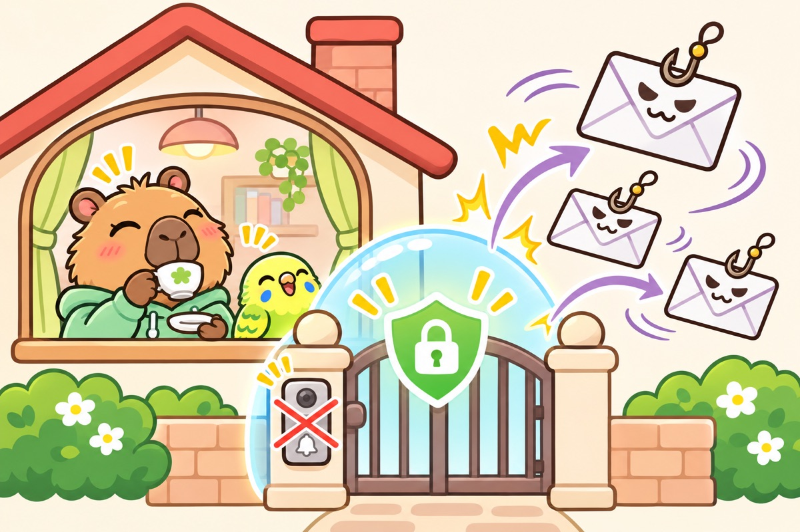
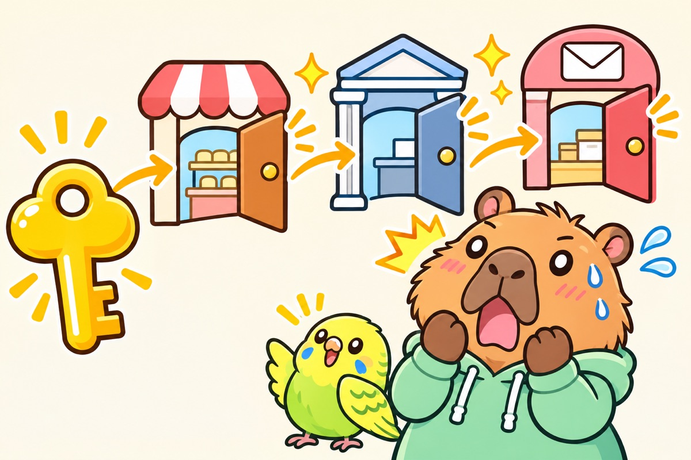
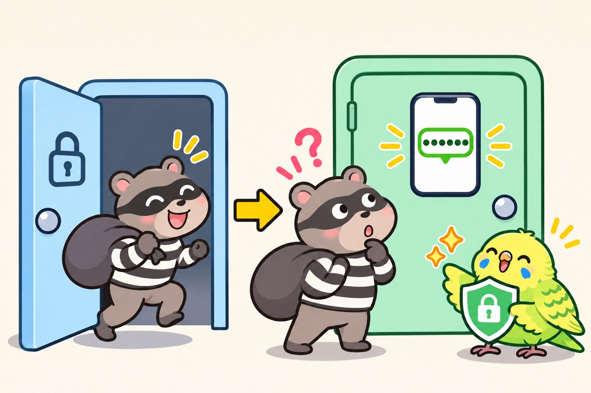

2026年11月11日 おけもんより
10月8日から11月8日まで、両学長は朝のライブでほぼ毎日のようにセキュリティの話をしていました。13回ぶんの話を読み返して、何度も出てきたことを、出てきた回数の多い順に並べたのがこのページです。
「ずっと伝えてることさえ、ちゃんと守っといてもらえたら、体感99%はカットできますわ」
10月9日のライブ（24分34秒）全部やらなくて大丈夫です。学長も「優先度の高いところから絞って対策していくのがコスパがいい」と話していました（10月17日 36分35秒）。上から順に、できそうなものに1つずつチェックを入れてください。
やり方の画面は、10月28日にお渡しした「スマホの安心をひとつずつ」に載っています。このページは、その「なぜ」と「どれから」を学長の言葉で集めた続きです。
学長ライブ 10/8〜11/813回ぶん各項目に動画の時刻リンクつき
守る順番トップ7
13回のライブのうち、何回その話が出たかで並べました。回数は、話が実際に出てきた回の数です。

1段目から順に登っていきます。全部登らなくても、1段上がるごとに守りが強くなります。- 1金庫アプリ
- 2Gmailにまとめる
- 3使い回さない
- 42段階認証
- 5iPhone・Google
- 6リンクを押さない
- 7アプリ削除と更新
1位
パスワードは「鍵の金庫」アプリにまとめる
13回中12回。いちばん多く出てきました

鍵はサイトごとに全部ちがう形。その鍵を1つの金庫にしまっておくのが1Passwordです。
「パスワード管理ソフトはこれからの時代どうせ必須になるから入れといた方がいいですよ。最初ちょっと大変ですけどね」
10月30日（18分17秒）人が覚えられる数には限りがあるので、覚えようとすると同じパスワードを使い回すことになります。学長がすすめているのは「1Password」というアプリです。サイトごとにバラバラの強いパスワードを作って、しまっておいてくれます。
1Password特集のページを開く →
学長ライブ：10/1710/2410/3011/6
2位
Gmailに、メールをひとつにまとめる
13回中9回

だましのメールが、門の手前ではじかれます。インターホンが鳴らないので、家の中は安心です。
「Gmailに集約しとくと、詐欺メールが、ま、99%体感カットできるんで」
10月8日（17分9秒）だましのメールは、見分けるより届かないほうが安心です。学長は「インターホンを鳴らされないのが一番いい」とたとえていました。Gmailは迷惑メールをはじく力が強いので、ネット通販や銀行に登録するメールアドレスをGmailにそろえていきます。
Q. 登録しているサイトが多くて、全部変えるのは大変です
A. 一気にやらなくて大丈夫です。銀行・証券・Apple・Googleなど、取られたら困る所から変えていきます。古いメールアドレスは残しておいて、スマホで受け取らない設定にすればいいそうです（10/17）。
押す順番（Apple IDの場合）
設定›自分の名前›サインインとセキュリティ›メールアドレスの欄の「編集」
図つきの手順を見る →
学長ライブ：10/810/1710/2511/7
3位
同じパスワードを使い回さない
13回中8回。10/24の事件のあとに集中しました

同じ鍵を使い回すと、1本盗まれただけで、お店も銀行もメールも開いてしまいます。
あるサイトから漏れたIDとパスワードを、犯人はほかのサイトでも試します。1つ漏れただけで、同じパスワードの所に次々と入られてしまいます。学長は「2段階認証をしていたのに破られた」という相談も、調べると原因は使い回しだったと話していました（10/24）。
Q. 金庫アプリに入れておけば、使い回しでも大丈夫？
A. 「これが全然ダメ」だそうです。金庫は、パスワードを書いたノートのデジタル版です。入れたからといって強くなるわけではなく、中身をサイトごとに別々にすることが大事です（10/24）。
押す順番（1Passwordを使っている人）
1Password›Watchtower›使い回されたパスワード
図つきの手順を見る →
学長ライブ：10/2410/2810/3011/7

パスワード（1枚目の扉）が盗まれても、スマホに届く確認コード（2枚目の扉）で止まります。
パスワードが漏れても、2枚目の扉（スマホに届く確認コードなど）があれば止められます。学長は「もう必須ぐらいでやっといた方がいい」と話していました（10/8）。
Q. 2段階認証をしていれば絶対に安全？
A. 完璧ではありません。だましのページでコードまで入力してしまうと突破されます。だから2位の「メールをまとめる」と、6位の「リンクを押さない」とセットで守ります（10/8・10/17）。
押す順番（iPhone）
設定›自分の名前›サインインとセキュリティ›2ファクタ認証
図つきの手順とGoogleの開き方 →
やり方：前回の資料「2ファクタ認証」「Googleの診断」
学長ライブ：10/810/1710/28
5位
iPhoneとGoogleアカウントを固める
10/28にまとめて。10/17には「特に盗まれちゃ困る所」と
「盗難デバイスの保護をオン。これは絶対やってください」
10月28日（54分0秒）AppleとGoogleのアカウントは、写真・連絡先・ほかのサイトのログインまで全部につながっている「親の鍵」です。前回の資料の手順は、この10/28の回がもとになっています。まだの所があれば、ここから進めてください。
押す順番（盗難デバイスの保護）
設定›Face IDとパスコード›盗難デバイスの保護›常に
図つきの手順を見る → 4つまとめて →
やり方：盗難デバイスの保護復旧用連絡先Googleの診断
学長ライブ：10/1710/2811/7（Googleの予備の鍵）
6位
メールやSMSのリンクは押さない
13回中5回。10/8〜9に集中しました
「情報が漏れたのでパスワードを変えてください」というメールは、本物でもリンクから入らないのが学長のすすめです。宅配便を名乗るSMSも同じです。気になったら、ブックマークや公式アプリから自分で開きます。学長によると、引っかかりやすいのは疲れている時や忙しい時だそうです（10/17）。
学長ライブ：10/810/9
7位
使わないアプリを消して、スマホを最新にする
更新の話は13回中8回
古いままのアプリやOSには、穴が空いたままになっていることがあります。学長は、OSの更新は「セキュリティ対策ソフトうんぬんの前に、一番最初にやらなあかんこと」と言っていました（10/28）。アプリは減らすほど更新の手間も減ります。目安は45〜50個くらいだそうです（10/17）。
押す順番
ホーム画面›アイコンを長押し›アプリを削除
設定›一般›ソフトウェアアップデート
アプリ削除の図 アップデートの図 →
やり方：前回の資料「OSを更新」
学長ライブ：10/1710/2510/28